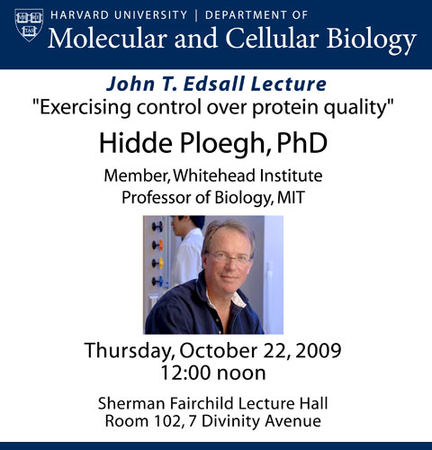

News Archives : 2009 : Hidde Ploegh to Deliver 2009 John T. Edsall Lecture
by Jack Strominger
October 20, 2009

Hidde Ploegh first joined the Department from the Netherlands in the mid 1970s to do his undergraduate thesis in microbiology in Jack Strominger's lab. The lab was then working on bacterial cell walls and penicillin. He stayed for six months, returned to Holland to finish his undergraduate degree and then came back as a visiting graduate student from the University of Leiden (a university nearly a 100 years older than Harvard!).
Many European universities allow graduate students to do their thesis research at any approved school. By this time the Strominger lab had largely switched fields and was working on human hystocompatibility antigens. Hidde's PhD thesis in 1981 was defended in the Senate Room of the University of Leiden, the walls of which are covered with portraits of former professors, done by prominent Dutch painters. The legend is that the portraits are selected not by the quality of the professor but by the talent of the artist.
He did his postdoctoral work in Cologne Germany in immunology with Klaus Rajewsky, now a Professor at Harvard Medical School, who later discovered the CRE-LOX system to knock out genes.
After a period at the Netherlands Cancer Institute Hidde joined the faculty of the MIT Cancer Research Center. Later he returned to Harvard as a Professor in the Department of Pathology and most recently moved back to MIT in the Whitehead Research Institute.
For many years he also taught MCB169, the introductory immunology course. His exceptional work on antigen presentation eventually led to his study of the quality control of proteins, the subject of his lecture today and a subject that John Edsall would have loved.
The annual lecture series is in memory of John T. Edsall, of Harvard Biochemical Sciences. Edsall’s contribution to science was perhaps only overshadowed by his devotion to teaching, forming a course on biophysical chemistry and codifying this with a text book, as well as serving as a tutor for more than forty years (Head Tutor for twenty of those) and contributing to the development of a biochemistry graduate program at Harvard. Upon his retirement, Konrad Bloch spoke of him, “Throughout his career he gained prestige without seeking it, for he served science rather than used science for his own purposes.”